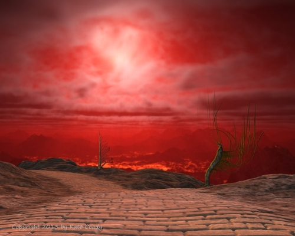

Delight (Part 3)
by
Andy Robertson
They passed through a swarm of beetles that was crossing the road in a black river of chitin, Each beetle was the size of her arm. The machine waded through the swarm halfway up to its knee joints while she huddled in the center of its back and beat off stragglers. Waves of chittering struggling bodies surged toward them and over them, and the machine, half-submerged, lifted her up above the horde with one arm as it ran, crushing insect bodies flat underfoot.
An azhdarcho, a real one, landed on the road ahead of them, spanning its width with its leathery wings, skidding and slipping. Its stink spread in the air. Everything fled, and even the machine stopped respectfully, waiting in dead stillness until the beast had reconfigured itself into its quadrupedal elbow-walking mode and stalked off the road to forage, and then waiting a little longer.
"You love no-one?" To the youth again now, and timedly, even in a dream.
No. I am too young.
"But you love your flying machine, winged thing, metal azhdarcho. You call her She."
That is different. She is a made thing and obedient. The jaegers were made things too, but they ceased to be obedient long ago. Now they are one more thing split off from True Humans and running wild in the Twilight Land, dangerous but useful sometimes.
"How could things like this machine be split off from us? They were never part of us. They are machines."
I do not understand it either but this is what I have been told. In the Days of Light, in Eden, Man was allied with all the myriads of living things in the world: with tiny germs of life that lived within him and made him stronger and healthier, but also with plants that captured the Sun's light and made food, and with Beasts that ran hither and yon at his bidding or bore him on their back, and also with Machines that flew or rolled or made pots and pans and knives and other Machines at his bidding. All united in love. But all this is changed. Now the Beasts are all our enemies, and the Machines hunt us, and even the tiny germs consume us from within. All things that were once our allies have become enemies, and even Man has split into a myriad false brethren that gnaw at each other. That is why the True Men have retired from the world, save for such as I.
"So your flying ship is obedient now. But perhaps she will rebel as well."
Never.
"You can not know. Those ancient people, they trusted their machines."
Listen! When we launched her I took honeycomb and broke it; I smeared it across the painted eyes and the masers. I swore to love and protect her, my Ship. The Master and the Seniors triggered her mind to waking for the hundredth time in her long long life, after her sleep, and then how she stirred! How she soared! She will never betray me, and I sleep under the shadow of her wings.
"I do not understand all that. But I am not a made thing and I am not obedient. If you want to talk to me again you must do better. Tell me more. Answer my questions plainly." He had no real interest in her. How could he? She had been a fool.
You may crawl upon the earth for days yet before judgment is reached. I would help you if I could. But I cannot answer all your questions.
"Judgment? Go back and sleep with your metal bird. I am going to wake up now."
The machine fed her milk and the threads of bread it seemed to be able to produce. She grew stronger and calmer, and as she did she found her memory of Uthwer fading like a dream.
The strange men in the flying ship, if that was what they truly were, spoke to her again and again in her dreams. They questioned her about Uthwer and its sister towns, and about her people's mode of life, and she answered honestly enough. She no longer doubted they were real, but the days passed and passed before she came closer to understanding.
A clique of four young azhdarcho attempted to mount above the flying ship and destroy it. They outflew it effortlessly and gracefully, gliding through the still air at a lower angle of attack than it could sustain, planing up in narrower spirals centered around slighter and thinner thermal columns than it could exploit, till at last they had mounted thousands of feet above it, a grim quartet of black arcs against the dull brown of the zenith. She watched in horrified fascination, imagining that they must be mistaking it for an old territory-holding male. The first fell towards the ship in a hissing stoop, with its claws spread to tear the membrane of the wing. As the ship and the azhdarcho became confused from her point of view there was a single flash and the beast was converted into a graceless bundle of bones and tissue, falling slowly in the still air. It landed with a gentle crunch some way ahead. When they passed it half an hour later the beetles were already stripping its bones.
What do you love? From the older men.
"Why do you always ask me that? I have told you every thing I know. I loved my home and my people. When the abhumans came I tried to love them too. I realize that was a mistake. They compelled it somehow. But I cannot keep answering the same question."
Your people were enslaved by the Pseftikosagape. They are also called the Ippae or Riders. They are a clade of abhumans, very successful, who domesticate True men by telepathic and pheromonal hypnotism and selectively breed them as men once bred beasts. They have driven out or subdued human beings in most of the eastern quarter of the Valley. We do not understand how they do this but we know they make their slaves love them in some deep way. And that is why we ask you this question.
"Very well. I do not love them. I hate them and now I could say it even if I was awake. But why do you not come back with me and fight them, if you think they are evil? Kill them with your lightnings?"
The air ships are few and the Old Machines and Beasts and Unforgiven fill the Valley. We punish them only when they seek to approach us. You have seen.
"Yes. The boy was very proud."
The land grew stranger. It was colder now — the machine had made her a tattered fraying cloak of woven threads — and the sun was perceptibly lower in the sky. There was less life, but as if to compensate, the rocks and stones were breaking forth in an efflorescence of shapes and forms that echoed nothing she could remember seeing anywhere, shapes repeating and imitating themselves on multiple scales, like and yet unlike crystals or vast flowers. The withered trees and frostmoss crawled over these forms as if they were slowly reclaiming them, worming their roots into hollows and cracks. She thought - trying to interpret the unknown - that it was as if each outburst of stone had spread fast and deadly across the land but then had stopped, and the earthly life was creeping back over it. It was hard to be certain, for none of the crystal eruptions were near the road.
The loom of distant mountain-walls beyond the horizon was more visible. She knew that all that remained of life on the planet lay within a great valley. It was one of the unexamined certainties of her worldview. She knew also that the surface of the planet outside the valley was utterly uninhabitable, so cold that the sparse air froze, and infested by ghost-monsters that would consume anything alive that crept out. But now for the first time she could properly see the Walls of the World, the boundaries of the valley, cliffs so vast they looked like fallen moons, standing up out of the ocean of air at the bottom of which she dwelt and shining in the dying Sun. To her right they made an unbroken wall, but to the left, the north, they fell away in great mass behind great dim mass, and a black bar of shadow cast from them cut across the high rare air. The valley turned north here, she was told, at the place anciently called the Bight, and drove on into the gloom for a space as great as the lit lands behind her. She supposed the northern branch would be dark and cold with its floor always in the shadow of the Walls. If this was a Twilight land, the northern branch would be what? And what could live there?
They passed a Giant, three fathoms tall, with legs like columns and round pad feet, walking slowly along parallel to the road. Its face was frozen in a wise and noble mask. It ignored them.
"Why do you not descend and talk to me, at least, if you are real and mean me no harm?"
We cannot land. Like an azhdarcho we can only rise again with a clear open space to gather speed. But the flying ship is larger than an azhdarcho and needs an even greater space. The road here will not do. Go back to your dreams.
Twice more they met entities that were apparently too dangerous for the machine to confront. The first time the flying ship seemed to try to give them some warning: it came swooping down a long slope of air towards them, hooting and clanging, and the machine turned away at right angles and pelted off towards a shining crystal forest, its legs kicking up misty blue splinters as it ran. She clung on, too concerned with dodging the splinters to look back. When they were far enough away the machine halted, but by then the road was out of sight. They did not return to it for half a diphae, and she never found out what had provoked the flight.
The second time was different. She had left the machine's back for a minute. When she returned it was already moving away. Something straddled the machine's neck: a gaunt scarred woman with pale hair and wild black eyes, dressed in filthy rags, lean, unbeautiful, herself. She called out and one of the machine's heads swung towards her, and then the whole machine stopped, comically like a startled human being. Its three heads swung and darted and its limbs trembled.
The image of herself on its back uttered something like the cooing cry of a bird and slipped lithely off. It smiled and came towards her, its hands outstretched. It ran towards her very fast, smiling.
She raised her fusil but it did not stop. She fired. The thing shrieked out a musical note that made her bones twitch and ring and flittered away into sparks and shadows as the iron pellets shot through it. It was gone.
The machine came towards her. She raised her hands, smiling, and words streamed out of her mouth by themselves. She shut her lips and felt her tongue writhe. Something had changed in her or was trying to take root in her. She swept round in case the copy-thing was creeping up behind her but there was nothing there.
An odd tension in the air faded, diminished, was gone.
There was a sudden noise in the bushes nearby. Something large and heavy was fleeing away as fast as it could. The machine started pursuing it and then stopped, returning to her, but not before she had seen what was escaping. It was another spider-beetle-turtle of metal, like the machine, and she knew she had seen it at the bridge over the gorge, in the bushes, that it had been following them for some time.
A copy of the machine, like the false thing had been a copy of her???.
She felt normal again, but the machine still would not approach. She tried singing to it and talking to it and at last it seemed to trust her, but it would not allow her to ride it yet. At last she gave up and fell to the routine care of the fusil. She had nothing else to do. She turned the chambers and opened and cleaned them one after the other, using her fingers since she had no tools, easing the action, and reufully looking at and fingering the single loaded chamber that was her last weapon. The fourth time she opened the breech the machine came close and bent over her. "Gunnnnnn," it said. It had required no time to learn the word and it probably did not need her to teach it the word. Everything knew that word and it was the same word in every language. It struck her that the copy of her that had tried to mount the machine had had no fusil, no pouch, nothing but the appearance of clothing.
After a second's thought she unscrewed the last chamber and took out the stones she had packed it with, offering the machine the black fibrous explosive tissue under them. It chewed and tasted.
"Will you at least tell me where you are taking me?"
We are taking you nowhere. The manshonyagger found you and bears you to us.
"What is a manshonyagger? Is it the same as jaeger?"
The machine that carries you. The word means Hunter of Men and in ancient days its kind slew millions. Later they were set up by one group of men to govern and control all others, and they trained and pruned the Race as a tree is pruned. Still later we rebelled and left the Great House where we dwelt under their rule, and built our own and proper Redoubt. The Great House was left to its own dead perfections. But the Manshonyaggers followed us forth, leaving the Great House secretly by ones and twos and begging for entry to the Redoubt. We refused, for we had learned bitter wisdom, but still they come out, ignoring their orders and surrounding the Redoubt, ranging back and forth through the Twilight Land. Now only one of their kind is left in the Great House, weaving its web across silent halls where time is frozen by its ancient sorcery.
"Where is it taking me then? Where do you come from?"
To the Last Citadel of Earth, to Utter Tower. To the Great Mother Redoubt.
"And when I reach the Redoubt? What then?"
We shall see.
Now the machine cried out to the flying ship each time it arrived to circle. Sometimes it spoke and shouted skyward for long hours, apparently trying the same method of varying tones and modes and sounds it had employed to learn her language, but the sounds were clangs, shrieks, hissing digital chattering and siren howls, deafening her. It kept it up for hours after the flying ship vanished. She bore it patiently, but after one session she resolved to try singing to the machine to calm it, the way she had sometimes sung to the ancient mechanical guards in Uthwer. It stopped shrieking and listened to her quietly, and her singing seemed to please it.
After that, she sang to the machine each time the flying ship left. She was not imitating their language in the same way it had tried to imitate and learn hers. She did not think of what she sang, or remember and list sounds and songs: she merely opened her mouth and let tones and themes emerge from some place deep inside her. Learning that the machine was as lost and alone as her had changed things, and she tried to put that thought in her songs, remembering her own wandering, and thinking of the manshonyagger's far longer search.
© 2008 by Andy Robertson.
Image © 2015 by Kate Coady.